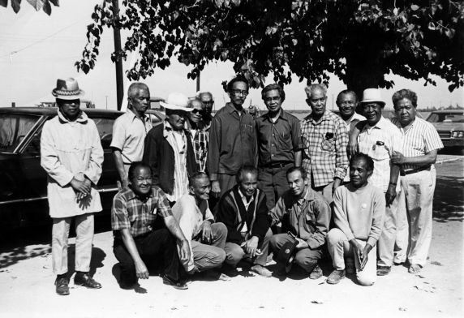

Pete Velasco, was born in 1910 in Asingan, Philippines. Having migrated to Los Angeles in 1931, Pete Velasco was a manong. Manong is a term of endearment and respect familiar to many Filipinos. In between the 1930s and 1940s, the word adapted a new meaning, referring to the thousands of Pilipino immigrants, Velasco among them, driven by hopes of education and advancement to the United States.
Pete Velasco was a veteran of the labor wars that created the United Farm Workers. With other Filipino leaders, Philip Veracruz and Larry Itliong, he started the great grape strike of 1965 when the union was born, and became one of its leaders in the years that followed.
Velasco was called manong, a term of respect given to older people in Filipino culture. But along the Pacific Coast, manong means more than that. It is the name of a generation. It was the first wave of immigrants from the Philippines. And it left an indelible imprint on American working-class history.
The voice of Velasco's generation denies the accepted wisdom that immigrants are simply docile labor, to be sweated for pennies, or a vast reservoir of entrepreneurial ambition, seeking just narrow self-interest.
Between 1920 and the end of the 1930s, tens of thousands of men, mostly farmers, left their lands and villages in the islands. Like Velasco, who came in 1931, they were driven by hopes of education and advancement, crossing the Pacific Ocean to America when it was a voyage of weeks.
But here they found no promised land. Instead, they found hard labor, bad conditions and discrimination.
For the next five decades, they sailed in rusty ships to Alaskan salmon canneries so isolated that no roads led there. They travelled through the desert valleys of the southwest, migrating from field to field, labor camp to labor camp, picking everything from grapes to asparagus. They sweated in the hot kitchens of restaurants, returning in the small hours of the morning to the hotels for single men scorned by polite society as skid row.
In the more affluent parts of town a simple sign announced - No Filipinos Allowed. "When we walked the sidewalks in the early days," Velasco remembered, "they shouted at us, 'Hey monkey - go home!'"
They were single men, not by choice, but because the law denied them the right to a family. When they danced with white women in the taxi dance halls, they were called a threat to white society. U.S. immigration laws prevented women from the islands from entering the country until after World War Two.
Anti-miscegenation laws in California and the west prohibited the marriage of Filipino men and white women. A few of Velasco's countrymen travelled a thousand miles to the states of the midwest to find a legal wedding, and Velasco himself only married long after those laws were struck down.
Their purpose in America, in the eyes of employers and politicians, was simply to work, not to have families and raise children.
What they found in America made them hard. They became a generation of union organizers and radicals, men conscious of their class status, not just as workers, but as immigrant workers on the bottom of American society. They led strikes and founded unions; they wrote books and edited newspapers. And for the few children born from that generation, they became of host of uncles.
They embodied the best of the immigrant experience. By force, they stood as outsiders looking in, matching the professed ideals of justice and equality with reality as they found it. That such idealism was possible under such forbidding circumstances might seem a miraculous exception, were it not reflected in the immigrant experience of millions of other workers, coming to the U.S. for a century, from every continent. The challenge of the ideas they brought with them has been a bedrock of strength for unions, civil rights organizations, and the movements of people on the bottom.
Few of Velasco's generation are left - he was one of the last. In the last decade, new generations sought out manongs like Pete Velasco and Philip Veracruz in the small dusty towns of the San Joaquin Valley. Velasco had no difficulty recalling the hardship and discrimination his generation fought against. To him, they weren't obstacles safely overcome in a distant past. His advice was simple. "Those days are gone," he said, "but don't let your guard down. Organize. Unite yourselves. Be strong."